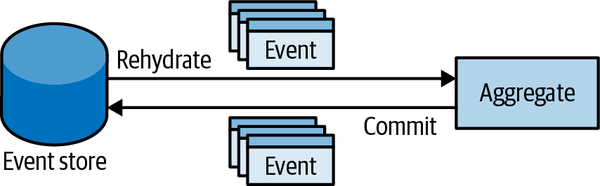
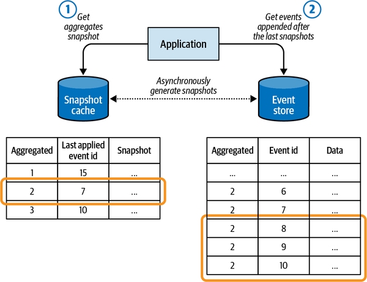

In the previous chapter, you learned about the domain model pattern: its building blocks, purpose, and application context. The event-sourced domain model pattern is based on the same premise as the domain model pattern. Again, the business logic is complex and belongs to a core subdomain. Moreover, it uses the same tactical patterns as the domain model: value objects, aggregates, and domain events.
The difference between these implementation patterns lies in the way the aggregates’ state is persisted. The event-sourced domain model uses the event sourcing pattern to manage the aggregates’ states: instead of persisting an aggregate’s state, the model generates domain events describing each change and uses them as the source of truth for the aggregate’s data.
This chapter starts by introducing the notion of event sourcing. Then it covers how event sourcing can be combined with the domain model pattern, making it an event-sourced domain model.
Show me your flowchart and conceal your tables, and I shall continue to be mystified. Show me your tables, and I won’t usually need your flowchart; it’ll be obvious.
Fred Brooks1
Let’s use Fred Brooks’s reasoning to define the event sourcing pattern and understand how it differs from traditional modeling and persisting of data. Examine Table 7-1 and analyze what you can learn from this data about the system it belongs to.
| lead-id | first-name | last-name | status | phone-number | followup-on | created-on | updated-on |
|---|---|---|---|---|---|---|---|
| 1 | Sean | Callahan | CONVERTED | 555-1246 | 2019-01-31T10:02:40.32Z | 2019-01-31T10:02:40.32Z | |
| 2 | Sarah | Estrada | CLOSED | 555-4395 | 2019-03-29T22:01:41.44Z | 2019-03-29T22:01:41.44Z | |
| 3 | Stephanie | Brown | CLOSED | 555-1176 | 2019-04-15T23:08:45.59Z | 2019-04-15T23:08:45.59Z | |
| 4 | Sami | Calhoun | CLOSED | 555-1850 | 2019-04-25T05:42:17.07Z | 2019-04-25T05:42:17.07Z | |
| 5 | William | Smith | CONVERTED | 555-3013 | 2019-05-14T04:43:57.51Z | 2019-05-14T04:43:57.51Z | |
| 6 | Sabri | Chan | NEW_LEAD | 555-2900 | 2019-06-19T15:01:49.68Z | 2019-06-19T15:01:49.68Z | |
| 7 | Samantha | Espinosa | NEW_LEAD | 555-8861 | 2019-07-17T13:09:59.32Z | 2019-07-17T13:09:59.32Z | |
| 8 | Hani | Cronin | CLOSED | 555-3018 | 2019-10-09T11:40:17.13Z | 2019-10-09T11:40:17.13Z | |
| 9 | Sian | Espinoza | FOLLOWUP_SET | 555-6461 | 2019-12-04T01:49:08.05Z | 2019-12-04T01:49:08.05Z | 2019-12-04T01:49:08.05Z |
| 10 | Sophia | Escamilla | CLOSED | 555-4090 | 2019-12-06T09:12:32.56Z | 2019-12-06T09:12:32.56Z | |
| 11 | William | White | FOLLOWUP_SET | 555-1187 | 2020-01-23T00:33:13.88Z | 2020-01-23T00:33:13.88Z | 2020-01-23T00:33:13.88Z |
| 12 | Casey | Davis | CONVERTED | 555-8101 | 2020-05-20T09:52:55.95Z | 2020-05-27T12:38:44.12Z | |
| 13 | Walter | Connor | NEW_LEAD | 555-4753 | 2020-04-20T06:52:55.95Z | 2020-04-20T06:52:55.95Z | |
| 14 | Sophie | Garcia | CONVERTED | 555-1284 | 2020-05-06T18:47:04.70Z | 2020-05-06T18:47:04.70Z | |
| 15 | Sally | Evans | PAYMENT_FAILED | 555-3230 | 2020-06-04T14:51:06.15Z | 2020-06-04T14:51:06.15Z | |
| 16 | Scott | Chatman | NEW_LEAD | 555-6953 | 2020-06-09T09:07:05.23Z | 2020-06-09T09:07:05.23Z | |
| 17 | Stephen | Pinkman | CONVERTED | 555-2326 | 2020-07-20T00:56:59.94Z | 2020-07-20T00:56:59.94Z | |
| 18 | Sara | Elliott | PENDING_PAYMENT | 555-2620 | 2020-08-12T17:39:43.25Z | 2020-08-12T17:39:43.25Z | |
| 19 | Sadie | Edwards | FOLLOWUP_SET | 555-8163 | 2020-10-22T12:40:03.98Z | 2020-10-22T12:40:03.98Z | 2020-10-22T12:40:03.98Z |
| 20 | William | Smith | PENDING_PAYMENT | 555-9273 | 2020-11-13T08:14:07.17Z | 2020-11-13T08:14:07.17Z |
It’s evident that the table is used to manage potential customers, or leads, in a telemarketing system. For each lead, you can see their ID, their first and last names, when the record was created and updated, their phone number, and the lead’s current status.
By examining the various statuses, we can also assume the processing cycle each potential customer goes through:
The sales flow starts with the potential customer in the NEW_LEAD status.
A sales call can end with the person not being interested in the offer (the lead is CLOSED), scheduling a follow-up call (FOLLOWUP_SET), or accepting the offer (PENDING_PAYMENT).
If the payment is successful, the lead is CONVERTED into a customer. Conversely, the payment can fail—PAYMENT_FAILED.
That’s quite a lot of information that we can gather just by analyzing a table’s schema and the data stored in it. We can even assume what ubiquitous language was used when modeling the data. But what information is missing from that table?
The table’s data documents the leads’ current states, but it misses the story of how each lead got to their current state. We can’t analyze what was happening during the lifecycles of leads. We don’t know how many calls were made before a lead became CONVERTED. Was a purchase made right away, or was there a lengthy sales journey? Based on the historical data, is it worth trying to contact a person after multiple follow-ups, or is it more efficient to close the lead and move to a more promising prospect? None of that information is there. All we know are the leads’ current states.
These questions reflect business concerns essential for optimizing the sales process. From a business standpoint, it’s crucial to analyze the data and optimize the process based on the experience. One of the ways to fill in the missing information is to use event sourcing.
The event sourcing pattern introduces the dimension of time into the data model. Instead of the schema reflecting the aggregates’ current state, an event sourcing–based system persists events documenting every change in an aggregate’s lifecycle.
Consider the CONVERTED customer on line 12 in Table 7-1. The following listing demonstrates how the person’s data would be represented in an event-sourced system:
{"lead-id":12,"event-id":0,"event-type":"lead-initialized","first-name":"Casey","last-name":"David","phone-number":"555-2951","timestamp":"2020-05-20T09:52:55.95Z"},{"lead-id":12,"event-id":1,"event-type":"contacted","timestamp":"2020-05-20T12:32:08.24Z"},{"lead-id":12,"event-id":2,"event-type":"followup-set","followup-on":"2020-05-27T12:00:00.00Z","timestamp":"2020-05-20T12:32:08.24Z"},{"lead-id":12,"event-id":3,"event-type":"contact-details-updated","first-name":"Casey","last-name":"Davis","phone-number":"555-8101","timestamp":"2020-05-20T12:32:08.24Z"},{"lead-id":12,"event-id":4,"event-type":"contacted","timestamp":"2020-05-27T12:02:12.51Z"},{"lead-id":12,"event-id":5,"event-type":"order-submitted","payment-deadline":"2020-05-30T12:02:12.51Z","timestamp":"2020-05-27T12:02:12.51Z"},{"lead-id":12,"event-id":6,"event-type":"payment-confirmed","status":"converted","timestamp":"2020-05-27T12:38:44.12Z"}
The events in the listing tell the customer’s story. The lead was created in the system (event 0) and was contacted by a sales agent about two hours later (event 1). During the call, it was agreed that the sales agent would call back a week later (event 2), but to a different phone number (event 3). The sales agent also fixed a typo in the last name (event 3). The lead was contacted on the agreed date and time (event 4) and submitted an order (event 5). The order was to be paid in three days (event 5), but the payment was received about half an hour later (event 6), and the lead was converted into a new customer.
As we saw earlier, the customer’s state can easily be projected out from these domain events. All we have to do is apply simple transformation logic sequentially to each event:
publicclassLeadStateProjection{publiclongLeadId{get;privateset;}publicstringFirstName{get;privateset;}publicstringLastName{get;privateset;}publicLeadStatusStatus{get;privateset;}publicPhoneNumberPhoneNumber{get;privateset;}publicDateTime?FollowupOn{get;privateset;}publicDateTimeCreatedOn{get;privateset;}publicDateTimeUpdatedOn{get;privateset;}publicintVersion{get;privateset;}publicvoidApply(LeadInitialized@event){LeadId=@event.LeadId;Status=LeadStatus.NEW_LEAD;FirstName=@event.FirstName;LastName=@event.LastName;PhoneNumber=@event.PhoneNumber;CreatedOn=@event.Timestamp;UpdatedOn=@event.Timestamp;FollowupOn=null;Version=0;}publicvoidApply(Contacted@event){UpdatedOn=@event.Timestamp;FollowupOn=null;Version+=1;}publicvoidApply(FollowupSet@event){UpdatedOn=@event.Timestamp;FollowupOn=@event.FollowupOn;Status=LeadStatus.FOLLOWUP_SET;Version+=1;}publicvoidApply(ContactDetailsChanged@event){FirstName=@event.FirstName;LastName=@event.LastName;PhoneNumber=@event.PhoneNumber;UpdatedOn=@event.Timestamp;Version+=1;}publicvoidApply(OrderSubmitted@event){UpdatedOn=@event.Timestamp;Status=LeadStatus.PENDING_PAYMENT;Version+=1;}publicvoidApply(PaymentConfirmed@event){UpdatedOn=@event.Timestamp;Status=LeadStatus.CONVERTED;Version+=1;}}
Iterating an aggregate’s events and feeding them sequentially into the appropriate overrides of the Apply method will produce precisely the state representation modeled in the table in Table 7-1.
Pay attention to the Version field that is incremented after applying each event. Its value represents the total number of modifications made to the business entity. Moreover, suppose we apply a subset of events. In that case, we can “travel through time”: we can project the entity’s state at any point of its lifecycle by applying only the relevant events. For example, if we need the entity’s state in version 5, we can apply only the first five events.
Finally, we are not limited to projecting only a single state representation of the events! Consider the following scenarios.
You have to implement a search. However, since a lead’s contact information can be updated—first name, last name, and phone number—sales agents may not be aware of the changes applied by other agents and may want to locate leads using their contact information, including historical values. We can easily project the historical information:
publicclassLeadSearchModelProjection{publiclongLeadId{get;privateset;}publicHashSet<string>FirstNames{get;privateset;}publicHashSet<string>LastNames{get;privateset;}publicHashSet<PhoneNumber>PhoneNumbers{get;privateset;}publicintVersion{get;privateset;}publicvoidApply(LeadInitialized@event){LeadId=@event.LeadId;FirstNames=newHashSet<string>();LastNames=newHashSet<string>();PhoneNumbers=newHashSet<PhoneNumber>();FirstNames.Add(@event.FirstName);LastNames.Add(@event.LastName);PhoneNumbers.Add(@event.PhoneNumber);Version=0;}publicvoidApply(ContactDetailsChanged@event){FirstNames.Add(@event.FirstName);LastNames.Add(@event.LastName);PhoneNumbers.Add(@event.PhoneNumber);Version+=1;}publicvoidApply(Contacted@event){Version+=1;}publicvoidApply(FollowupSet@event){Version+=1;}publicvoidApply(OrderSubmitted@event){Version+=1;}publicvoidApply(PaymentConfirmed@event){Version+=1;}}
The projection logic uses the LeadInitialized and ContactDetailsChanged events to populate the respective sets of the lead’s personal details. Other events are ignored since they do not affect the specific model’s state.
Applying this projection logic to Casey Davis’s events from the earlier example will result in the following state:
LeadId: 12 FirstNames: ['Casey'] LastNames: ['David', 'Davis'] PhoneNumbers: ['555-2951', '555-8101'] Version: 6
Your business intelligence department asks you to provide a more analysis-friendly representation of the leads data. For their current research, they want to get the number of follow-up calls scheduled for different leads. Later they will filter the converted and closed leads data and use the model to optimize the sales process. Let’s project the data they are asking for:
publicclassAnalysisModelProjection{publiclongLeadId{get;privateset;}publicintFollowups{get;privateset;}publicLeadStatusStatus{get;privateset;}publicintVersion{get;privateset;}publicvoidApply(LeadInitialized@event){LeadId=@event.LeadId;Followups=0;Status=LeadStatus.NEW_LEAD;Version=0;}publicvoidApply(Contacted@event){Version+=1;}publicvoidApply(FollowupSet@event){Status=LeadStatus.FOLLOWUP_SET;Followups+=1;Version+=1;}publicvoidApply(ContactDetailsChanged@event){Version+=1;}publicvoidApply(OrderSubmitted@event){Status=LeadStatus.PENDING_PAYMENT;Version+=1;}publicvoidApply(PaymentConfirmed@event){Status=LeadStatus.CONVERTED;Version+=1;}}
The preceding logic maintains a counter of the number of times follow-up events appeared in the lead’s events. If we were to apply this projection to the example of the aggregate’s events, it would generate the following state:
LeadId: 12 Followups: 1 Status: Converted Version: 6
The logic implemented in the preceding examples projects the search-optimized and analysis-optimized models in-memory. However, to actually implement the required functionality, we have to persist the projected models in a database. In Chapter 8, you will learn about a pattern that allows us to do that: command-query responsibility segregation (CQRS).
For the event sourcing pattern to work, all changes to an object’s state should be represented and persisted as events. These events become the system’s source of truth (hence the name of the pattern). This process is shown in Figure 7-1.

The database that stores the system’s events is the only strongly consistent storage: the system’s source of truth. The accepted name for the database that is used for persisting events is event store.
The event store should not allow modifying or deleting the events2 since it’s append-only storage. To support implementation of the event sourcing pattern, at a minimum the event store has to support the following functionality: fetch all events belonging to a specific business entity and append the events. For example:
interfaceIEventStore{IEnumerable<Event>Fetch(GuidinstanceId);voidAppend(GuidinstanceId,Event[]newEvents,intexpectedVersion);}
The expectedVersion argument in the Append method is needed to implement optimistic concurrency management: when you append new events, you also specify the version of the entity on which you are basing your decisions. If it’s stale, that is, new events were added after the expected version, the event store should raise a concurrency exception.
In most systems, additional endpoints are needed for implementing the CQRS pattern, as we will discuss in the next chapter.
The original domain model maintains a state representation of its aggregates and emits select domain events. The event-sourced domain model uses domain events exclusively for modeling the aggregates’ lifecycles. All changes to an aggregate’s state have to be expressed as domain events.
Each operation on an event-sourced aggregate follows this script:
Load the aggregate’s domain events.
Reconstitute a state representation—project the events into a state representation that can be used to make business decisions.
Execute the aggregate’s command to execute the business logic, and consequently, produce new domain events.
Commit the new domain events to the event store.
Going back to the example of the Ticket aggregate from Chapter 6, let’s see how it would be implemented as an event-sourced aggregate.
The application service follows the script described earlier: it loads the relevant ticket’s events, rehydrates the aggregate instance, calls the relevant command, and persists changes back to the database:
01publicclassTicketAPI02{03privateITicketsRepository_ticketsRepository;04...0506publicvoidRequestEscalation(TicketIdid,EscalationReasonreason)07{08varevents=_ticketsRepository.LoadEvents(id);09varticket=newTicket(events);10varoriginalVersion=ticket.Version;11varcmd=newRequestEscalation(reason);12ticket.Execute(cmd);13_ticketsRepository.CommitChanges(ticket,originalVersion);14}1516...17}
The Ticket aggregate’s rehydration logic in the constructor (lines 27 through 31) instantiates an instance of the state projector class, TicketState, and sequentially calls its AppendEvent method for each of the ticket’s events:
18publicclassTicket19{20...21privateList<DomainEvent>_domainEvents=newList<DomainEvent>();22privateTicketState_state;23...2425publicTicket(IEnumerable<IDomainEvents>events)26{27_state=newTicketState();28foreach(vareinevents)29{30AppendEvent(e);31}32}
The AppendEvent passes the incoming events to the TicketState projection logic, thus generating the in-memory representation of the ticket’s current state:
33privatevoidAppendEvent(IDomainEvent@event)34{35_domainEvents.Append(@event);36// Dynamically call the correct overload of the "Apply" method.37((dynamic)state).Apply((dynamic)@event);38}
Contrary to the implementation we saw in the previous chapter, the event-sourced aggregate’s RequestEscalation method doesn’t explicitly set the IsEscalated flag to true. Instead, it instantiates the appropriate event and passes it to the AppendEvent method (lines 43 and 44):
39publicvoidExecute(RequestEscalationcmd)40{41if(!_state.IsEscalated&&_state.RemainingTimePercentage<=0)42{43varescalatedEvent=newTicketEscalated(_id,cmd.Reason);44AppendEvent(escalatedEvent);45}46}4748...49}
All events added to the aggregate’s events collection are passed to the state projection logic in the TicketState class, where the relevant fields’ values are mutated according to the events’ data:
50publicclassTicketState51{52publicTicketIdId{get;privateset;}53publicintVersion{get;privateset;}54publicboolIsEscalated{get;privateset;}55...56publicvoidApply(TicketInitialized@event)57{58Id=@event.Id;59Version=0;60IsEscalated=false;61....62}6364publicvoidApply(TicketEscalated@event)65{66IsEscalated=true;67Version+=1;68}6970...71}
Now let’s look at some of the advantages of leveraging event sourcing when implementing complex business logic.
Compared to the more traditional model, in which the aggregates’ current states are persisted in a database, the event-sourced domain model requires more effort to model the aggregates. However, this approach brings significant advantages that make the pattern worth considering in many scenarios:
Just as the domain events can be used to reconstitute an aggregate’s current state, they can also be used to restore all past states of the aggregate. In other words, you can always reconstitute all the past states of an aggregate.
This is often done when analyzing the system’s behavior, inspecting the system’s decisions, and optimizing the business logic.
Another common use case for reconstituting past states is retroactive debugging: you can revert the aggregate to the exact state it was in when a bug was observed.
The persisted domain events represent a strongly consistent audit log of everything that has happened to the aggregates’ states. Laws oblige some business domains to implement such audit logs, and event sourcing provides this out of the box.
This model is especially convenient for systems managing money or monetary transactions. It allows us to easily trace the system’s decisions and the flow of funds between accounts.
The classic optimistic concurrency model raises an exception when the read data becomes stale—overwritten by another process—while it is being written.
When using event sourcing, we can gain deeper insight into exactly what has happened between reading the existing events and writing the new ones. You can query the exact events that were concurrently appended to the event store and make a business domain–driven decision as to whether the new events collide with the attempted operation or the additional events are irrelevant and it’s safe to proceed.
So far it may seem that the event-sourced domain model is the ultimate pattern for implementing business logic and thus should be used as often as possible. Of course, that would contradict the principle of letting the business domain’s needs drive the design decisions. So, let’s discuss some of the challenges presented by the pattern:
All of these challenges are even more acute if the task at hand doesn’t justify the use of the pattern and instead can be addressed by a simpler design. In Chapter 10, you will learn simple rules of thumb that can help you decide which business logic implementation pattern to use.
When engineers are introduced to the event sourcing pattern, they often ask several common questions, so I find it obligatory to address them in this chapter.
Projecting events into a state representation indeed requires compute power, and that need will grow as more events are added to an aggregate’s list.
It’s important to benchmark a projection’s impact on performance: the effect of working with hundreds or thousands of events. The results should be compared with the expected lifespan of an aggregate—the number of events expected to be recorded during an average lifespan.
In most systems, the performance hit will be noticeable only after 10,000+ events per aggregate. That said, in the vast majority of systems, an aggregate’s average lifespan won’t go over 100 events.
In the rare cases when projecting states does become a performance issue, another pattern can be implemented: snapshot. This pattern, shown in Figure 7-2, implements the following steps:
A process continuously iterates new events in the event store, generates corresponding projections, and stores them in a cache.
An in-memory projection is needed to execute an action on the aggregate. In this case:
The process fetches the current state projection from the cache.
The process fetches the events that came after the snapshot version from the event store.
The additional events are applied in-memory to the snapshot.

It’s worth reiterating that the snapshot pattern is an optimization that has to be justified. If the aggregates in your system won’t persist 10,000+ events, implementing the snapshot pattern is just an accidental complexity. But before you go ahead and implement the snapshot pattern, I recommend that you take a step back and double-check the aggregate’s boundaries.
The event-sourced model is easy to scale. Since all aggregate-related operations are done in the context of a single aggregate, the event store can be sharded by aggregate IDs: all events belonging to an instance of an aggregate should reside in a single shard (see Figure 7-3).
This need can be addressed with the forgettable payload pattern: all sensitive information is included in the events in encrypted form. The encryption key is stored in an external key–value store: the key storage, where the key is a specific aggregate’s ID and the value is the encryption key. When the sensitive data has to be deleted, the encryption key is deleted from the key storage. As a result, the sensitive information contained in the events is no longer accessible.
Writing data both to an operational database and to a logfile is an error-prone operation. In its essence, it’s a transaction against two storage mechanisms: the database and the file. If the first one fails, the second one has to be rolled back. For example, if a database transaction fails, no one cares to delete the prior log messages. Hence, such logs are not consistent, but rather, eventually inconsistent.
From an infrastructural perspective, this approach does provide consistent synchronization between the state and the log records. However, it is still error prone. What if the engineer who will be working on the codebase in the future forgets to append an appropriate log record?
Furthermore, when the state-based representation is used as the source of truth, the additional log table’s schema usually degrades into chaos quickly. There is no way to enforce that all required information is written and that it is written in the correct format.
This approach overcomes the previous one’s drawback: no explicit manual calls are needed to append records to the log table. That said, the resultant history only includes the dry facts: what fields were changed. It misses the business contexts: why the fields were changed. The lack of “why” drastically limits the ability to project additional models.
This chapter explained the event sourcing pattern and its application for modeling the dimension of time in the domain model’s aggregates.
In an event-sourced domain model, all changes to an aggregate’s state are expressed as a series of domain events. That’s in contrast to the more traditional approaches in which a state change just updates a record in the databases. The resultant domain events can be used to project the aggregate’s current state. Moreover, the event-based model gives us the flexibility to project the events into multiple representation models, each optimized for a specific task.
This pattern fits cases in which it’s crucial to have deep insight into the system’s data, whether for analysis and optimization or because an audit log is required by law.
This chapter completes our exploration of the different ways to model and implement business logic. In the next chapter, we will shift our attention to patterns belonging to a higher scope: architectural patterns.
Which of the following statements is correct regarding the relationship between domain events and value objects?
Domain events use value objects to describe what has happened in the business domain.
When implementing an event-sourced domain model, value objects should be refactored into event-sourced aggregates.
Value objects are relevant for the domain model pattern, and are replaced by domain events in the event-sourced domain model.
Which of the following statements is correct regarding the options of projecting state from a series of events?
A single state representation can be projected from an aggregate’s events.
Multiple state representations can be projected, but the domain events have to be modeled in a way that supports multiple projections.
Multiple state representations can be projected and you can always add additional projections in the future.
Which of the following statements is correct regarding the difference between state-based and event-sourced aggregates? Select all that apply.
An event-sourced aggregate can produce domain events, while a state-based aggregate cannot produce domain events.
Both variants of the aggregate pattern produce domain events, but only event-sourced aggregates use domain events as the source of truth.
Event-sourced aggregates ensure that domain events are generated for every state transition.
Going back to the WolfDesk company described in the book’s Preface, which functionality of the system lends itself to be implemented as an event-sourced domain model?
The ticket lifecycle algorithm
Administration interface
Management of agents schedules